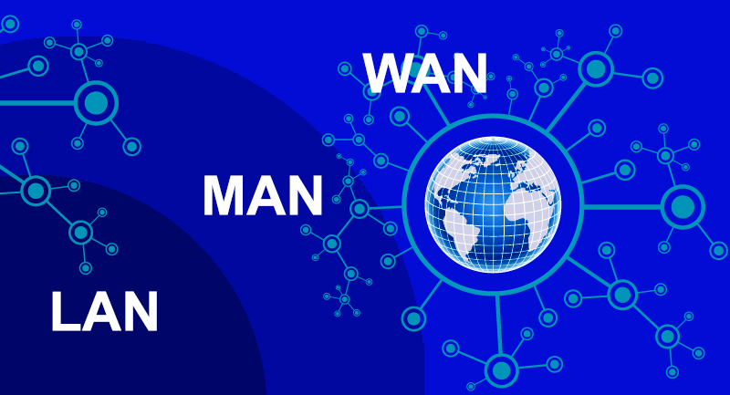

أنواع الشبكات
تصنيف الشبكات حسب النطاق الجغرافي
يمكن تصنيف شبكات الحاسوب حسب المساحة الجغرافية التي تغطيها إلى عدة أنواع رئيسية. يعتبر هذا التصنيف من أكثر التصنيفات شيوعًا واستخدامًا في مجال الشبكات.
.jpg)
1. الشبكة الشخصية (PAN - Personal Area Network)
هي أصغر أنواع الشبكات من حيث النطاق الجغرافي، وتستخدم لربط الأجهزة الشخصية للفرد في نطاق محدود جدًا (عادة في حدود بضعة أمتار).
خصائص الشبكة الشخصية:
- تغطي مساحة صغيرة جدًا (عادة في حدود 10 أمتار).
- تستخدم غالبًا تقنيات لاسلكية مثل البلوتوث (Bluetooth) أو الأشعة تحت الحمراء (Infrared).
- تربط الأجهزة الشخصية مثل الهواتف الذكية والحواسيب المحمولة والساعات الذكية وسماعات الرأس.
- سهلة الإعداد والاستخدام.
أمثلة على استخدامات الشبكة الشخصية:
- توصيل سماعة بلوتوث بالهاتف الذكي.
- مزامنة البيانات بين الهاتف الذكي والحاسوب المحمول.
- توصيل الساعة الذكية بالهاتف.
- نقل الملفات بين جهازين قريبين.
2. الشبكة المحلية (LAN - Local Area Network)
هي شبكة تغطي منطقة جغرافية محدودة مثل منزل أو مكتب أو مبنى أو مجموعة من المباني المتقاربة. تعتبر الشبكات المحلية من أكثر أنواع الشبكات انتشارًا واستخدامًا.
خصائص الشبكة المحلية:
- تغطي مساحة محدودة (عادة في حدود كيلومتر واحد).
- تتميز بسرعات نقل بيانات عالية (من 100 ميجابت/ثانية إلى 10 جيجابت/ثانية).
- تستخدم غالبًا تقنية إيثرنت (Ethernet) السلكية أو الواي فاي (Wi-Fi) اللاسلكية.
- تكون عادة مملوكة ومدارة من قبل نفس المؤسسة أو الشخص.
- تتميز بانخفاض معدل الأخطاء وزمن الاستجابة.
أمثلة على استخدامات الشبكة المحلية:
- شبكة المنزل التي تربط أجهزة الحاسوب والهواتف والتلفزيونات الذكية.
- شبكة المكتب التي تربط أجهزة الموظفين والطابعات والخوادم.
- شبكة المدرسة أو الجامعة التي تربط معامل الحاسوب والفصول الدراسية.
.png)
3. الشبكة الحضرية (MAN - Metropolitan Area Network)
هي شبكة تغطي منطقة جغرافية أكبر من الشبكة المحلية، عادة في حدود مدينة أو منطقة حضرية. تربط الشبكة الحضرية عدة شبكات محلية متباعدة.
خصائص الشبكة الحضرية:
- تغطي مساحة متوسطة (عادة في حدود 5-50 كيلومتر).
- تستخدم غالبًا تقنيات مثل الألياف البصرية أو الميكروويف.
- تتميز بسرعات نقل بيانات متوسطة إلى عالية.
- يمكن أن تكون مملوكة ومدارة من قبل مؤسسة واحدة أو عدة مؤسسات أو مزود خدمة.
أمثلة على استخدامات الشبكة الحضرية:
- ربط فروع الشركة أو المؤسسة في مختلف أنحاء المدينة.
- شبكات الجامعات التي تمتلك حرمًا جامعيًا موزعًا في أنحاء المدينة.
- شبكات البنوك التي تربط الفروع والصرافات الآلية.
- شبكات المدن الذكية التي تربط أنظمة المرور والمراقبة والخدمات العامة.
.png)
4. الشبكة الواسعة (WAN - Wide Area Network)
هي شبكة تغطي منطقة جغرافية واسعة مثل دولة أو قارة أو حتى العالم بأكمله. تعتبر شبكة الإنترنت أكبر مثال على الشبكات الواسعة.
خصائص الشبكة الواسعة:
- تغطي مساحة واسعة (عادة أكثر من 50 كيلومتر).
- تستخدم مجموعة متنوعة من تقنيات الاتصال مثل الألياف البصرية والأقمار الصناعية وخطوط الهاتف.
- تتميز بسرعات نقل بيانات متفاوتة (من بضع كيلوبت/ثانية إلى عدة جيجابت/ثانية).
- غالبًا ما تكون مملوكة ومدارة من قبل مزودي خدمة الإنترنت أو شركات الاتصالات.
- تتميز بارتفاع نسبي في معدل الأخطاء وزمن الاستجابة مقارنة بالشبكات المحلية.
أمثلة على استخدامات الشبكة الواسعة:
- شبكة الإنترنت العالمية.
- شبكات الشركات متعددة الجنسيات التي تربط مكاتبها حول العالم.
- شبكات البنوك والمؤسسات المالية العالمية.
- شبكات الحكومات والمنظمات الدولية.
تصنيف الشبكات حسب طريقة الاتصال
يمكن تصنيف الشبكات أيضًا حسب طريقة الاتصال المستخدمة بين الأجهزة:
1. الشبكات السلكية (Wired Networks)
هي الشبكات التي تستخدم وسائط سلكية مثل كابلات الإيثرنت أو الألياف البصرية لنقل البيانات بين الأجهزة.
مميزات الشبكات السلكية:
- سرعات نقل بيانات عالية ومستقرة.
- أمان أعلى نسبيًا مقارنة بالشبكات اللاسلكية.
- استقرار الاتصال وقلة التداخلات.
عيوب الشبكات السلكية:
- تحتاج إلى بنية تحتية من الكابلات والمعدات.
- أقل مرونة في التنقل والحركة.
- تكلفة إنشاء وصيانة أعلى.
2. الشبكات اللاسلكية (Wireless Networks)
هي الشبكات التي تستخدم موجات الراديو أو الأشعة تحت الحمراء لنقل البيانات بين الأجهزة دون الحاجة إلى كابلات.
مميزات الشبكات اللاسلكية:
- سهولة التنقل والحركة.
- سهولة التوسع وإضافة أجهزة جديدة.
- تكلفة إنشاء أقل نسبيًا (لا تحتاج إلى مد كابلات).
عيوب الشبكات اللاسلكية:
- سرعات نقل بيانات أقل نسبيًا من الشبكات السلكية.
- تأثر الاتصال بالعوائق والتداخلات.
- مخاوف أمنية أكبر (إمكانية اعتراض الإشارات).
تصنيف الشبكات حسب العلاقة بين الأجهزة
يمكن تصنيف الشبكات أيضًا حسب العلاقة بين الأجهزة المتصلة:
1. شبكة الند للند (P2P - Peer-to-Peer Network)
هي شبكة لا توجد فيها خوادم مركزية، حيث تتصل الأجهزة ببعضها البعض مباشرة وتتشارك الموارد بشكل متساوٍ.
مميزات شبكة الند للند:
- سهولة الإعداد والتكوين.
- تكلفة منخفضة (لا تحتاج إلى خوادم متخصصة).
- مناسبة للشبكات الصغيرة (أقل من 10 أجهزة).
عيوب شبكة الند للند:
- صعوبة الإدارة والتحكم المركزي.
- أمان أقل نسبيًا.
- غير مناسبة للشبكات الكبيرة.
2. شبكة الخادم-العميل (Client-Server Network)
هي شبكة توجد فيها خوادم مركزية تقدم خدمات وموارد للأجهزة العميلة المتصلة بها.
مميزات شبكة الخادم-العميل:
- إدارة وتحكم مركزي أفضل.
- أمان أعلى (يمكن تطبيق سياسات أمنية مركزية).
- مناسبة للشبكات المتوسطة والكبيرة.
- سهولة النسخ الاحتياطي واستعادة البيانات.
عيوب شبكة الخادم-العميل:
- تكلفة أعلى (تحتاج إلى خوادم متخصصة).
- تعتمد بشكل كبير على الخادم (نقطة فشل واحدة).
- تحتاج إلى إدارة وصيانة متخصصة.

تصنيف الشبكات حسب الغرض
يمكن تصنيف الشبكات أيضًا حسب الغرض الرئيسي منها:
1. شبكات التخزين (Storage Area Networks - SAN)
هي شبكات متخصصة لربط أجهزة التخزين (مثل الأقراص الصلبة وأنظمة التخزين) بالخوادم، وتستخدم غالبًا في مراكز البيانات.
2. شبكات المحتوى (Content Delivery Networks - CDN)
هي شبكات موزعة جغرافيًا لتوصيل المحتوى (مثل صفحات الويب والفيديو) للمستخدمين بسرعة وكفاءة أعلى.
3. الشبكات الافتراضية الخاصة (Virtual Private Networks - VPN)
هي شبكات تستخدم الإنترنت العامة لإنشاء اتصال آمن ومشفر بين الأجهزة أو الشبكات البعيدة.
خلاصة
تتنوع شبكات الحاسوب وتتعدد تصنيفاتها حسب عدة معايير مثل النطاق الجغرافي وطريقة الاتصال والعلاقة بين الأجهزة والغرض منها. يساعد فهم هذه التصنيفات في اختيار النوع المناسب من الشبكات للاحتياجات المختلفة، سواء كانت شخصية أو مؤسسية أو تجارية. كما يساعد في تصميم وتنفيذ وإدارة الشبكات بشكل أفضل.